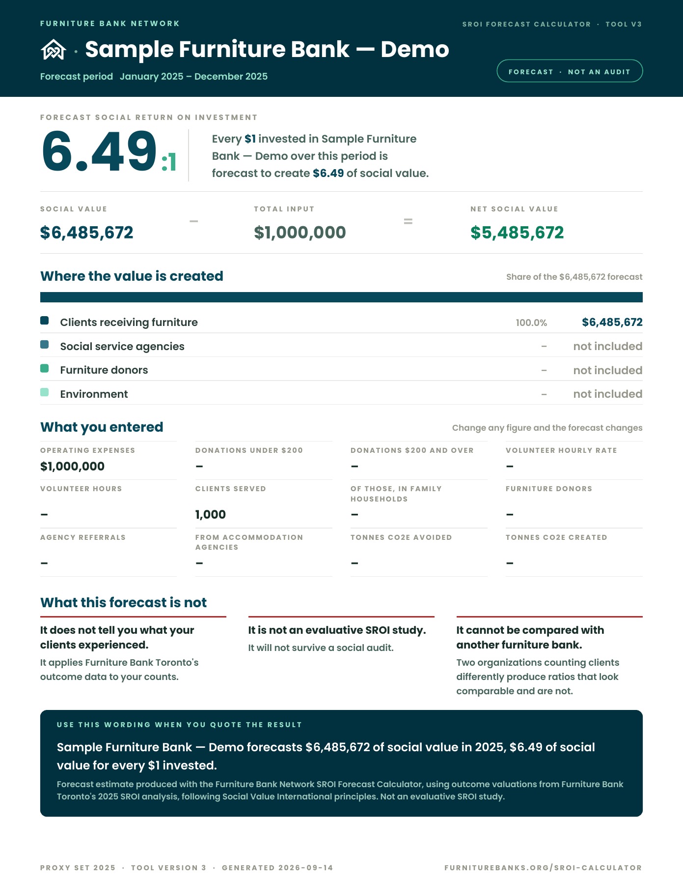

SROI Forecast Calculator
Furniture Bank · Public Forecast Tool
For furniture banks, there's a big difference between saying we furnished this many homes and diverted this much from landfill and understanding what that actually meant for the people, communities, and environment involved. And a furniture bank shouldn't need a huge budget every time a funder asks it to demonstrate that impact.
What is SROI?
The SROI ratio compares estimated social value with the resources invested. In the demo shown here, each $1 invested is forecast to create $6.49 of social value.
That figure is a modelled forecast based on the inputs and assumptions. It is not evidence that those outcomes have already happened.

The Furniture Bank Model
The model estimates outcomes for furniture recipients, donors, referring agencies and the environment. It combines activity counts with financial values for those outcomes, then adjusts for what might have happened anyway, other contributors and how long the effects last. The resulting value is compared with operating costs, donated furniture and volunteer time.
The calculator applies Furniture Bank Toronto’s model to an organization’s own inputs. Its result is a forecast based on that model, not a measurement of impact already achieved.
Read the Furniture Bank Network Resource ↗What I Built
I translated the model into a working web tool, implementing the calculations, input validation and result explanations for Canadian and U.S. analyses.
I designed the PDF export to bring the forecast, stakeholder breakdown, inputs and limitations into a clear, shareable document.
Behind the interface, I built a Cloud Run endpoint to validate and store submissions in BigQuery, with separate handling for test data and production reporting.
Header photograph by Dariya Ostrovska.